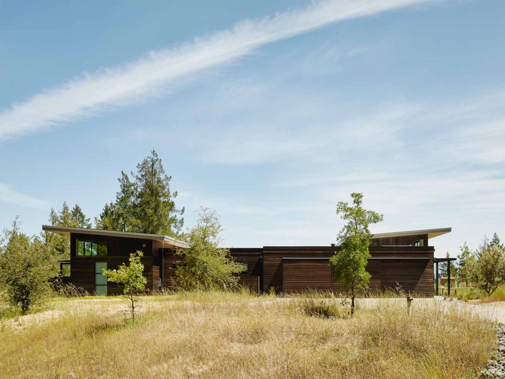
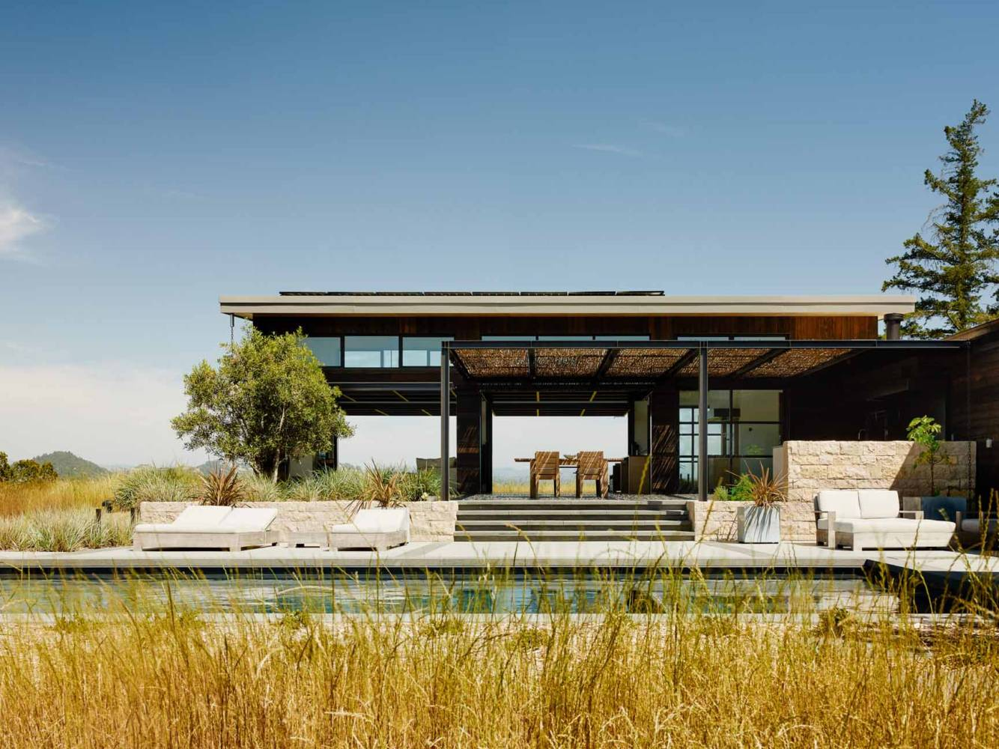
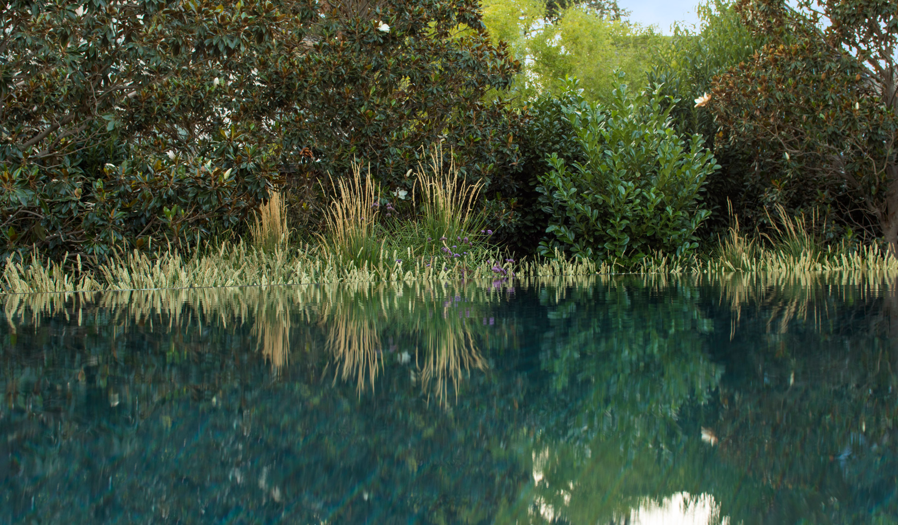

Totoro Hill Brief

Introduction
Totoro Hill is an invitation, an introduction, an initiation.

After a few miles on Rancho San Carlos, you drive up a steep and tortuous private road for three quarters of a mile. You are then greeted by a majestic oak tree, which acts as a natural gate to the estate. The hill spans 45 acres, 2 of which are dedicated to the homesite. You are now invited to discover its secrets and treasures. Welcome to Totoro Hill!

You continue up the driveway, surrounded by younger oak trees.

Soon, you reach a flat area. On the left, a 2-car garage and the workshops, one for wood, and one for metal. On the right, the main house. In between, the caretaker house. All five structures are connected by pergolas. The paved road stops at the flat area, and is replaced by loose gravel. Listen to the sound they make when you walk on them.
From the front, the buildings do not reveal many of their secrets.
But from the back, they are wide open to the surrounding environment. Their style is resolutely modern, with mostly straight lines and a minimalist inclination. But it is not austere nor cold. Instead, the intentional use of steel, aluminum, stone, concrete, and wood creates a warm and inviting feeling. Your hands want to touch the materials, feel the grains of wood, stone, and concrete, dip into the water of the many fountains found all around.
Water can be found everywhere on the homesite. Totoro Hill is an oasis within an oasis. A mise en abyme. A wall fountain next to the main house's entrance points you in the right direction. A lap pool between the main house and the oak forest flowing downhill doubles as a moat and water reservoir. A bathhouse on the Eastern side combines sauna, jaccuzi, and cold plunge with crushed ice dispenser. And three fountains mark the path leading to the guest house and zen shrine located at the Southern border of the homesite. Wehn looking at one of them, one name should come to mind: Monet.